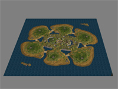
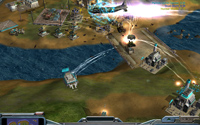
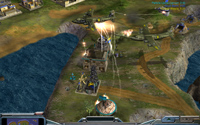
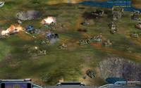
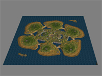
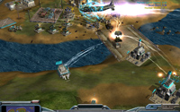
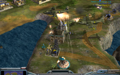
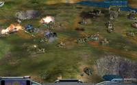

   
   Download this map for Generals Zero Hour
Flooded Island is a modified version of the map Any Island. As the name implies, the island has been partly flooded. Any Island was difficult due to open landscape making it difficult to prepare for land-based attacks. There are a number of fixes to improve several aspects of game-play:
- Base areas are now more isolated by water but connected via bridges.
- Added two large banana-shaped craters and six smaller rounded craters in the combat zone.
- Base areas have been flattened to make base building easier.
- Added gun towers next to supply docks nearby starting positions.
- Added a 1500$ crate behind each starting position.
- Positions and angles of various buildings, oil derricks, roads, and gun towers have been corrected.
- Changed angle of some buildings and reinforcement pads.
- Two towers and a truck was removed from the middle of the map.
- AI attack paths have been tweaked.
- Added rocks and fixed some textures.
A large island with a central platuae. Desert/meadow textures... quite a mix.
Two smaller islands with treasures in the sea!
One supply dock per base area. Extra supply docks between bases. Oil derricks and oil refineries on the central plateau. Some smaller supply piles around the oil derricks, and a supply dock in the center of the plateau. The small islands in the sea offers some extra goodies.
This map is challenging!
The computer AI tends to expand and attack counter-clockwise, as usual.
Optimized for Advanced AI Mod for C&C Generals: Zero Hour v0.98